Diagnostics: OCN#
[1]:
%load_ext autoreload
%autoreload 2
import os
os.chdir('/glade/u/home/fengzhu/Github/x4c/docsrc/notebooks')
import numpy as np
import x4c
print(x4c.__version__)
2024.4.15
Load a postprocessed CESM timeseries case#
[2]:
dirpath = '/glade/campaign/univ/ubrn0018/fengzhu/CESM_output/timeseries/b.e13.B1850C5.ne16_g16.icesm131_d18O_fixer.Miocene.3xCO2.005'
case = x4c.Timeseries(dirpath)
>>> case.root_dir: /glade/campaign/univ/ubrn0018/fengzhu/CESM_output/timeseries/b.e13.B1850C5.ne16_g16.icesm131_d18O_fixer.Miocene.3xCO2.005
>>> case.path_pattern: comp/proc/tseries/month_1/casename.mdl.h_str.vn.timespan.nc
>>> case.grid_dict: {'atm': 'ne16', 'lnd': 'ne16', 'rof': 'ne16', 'ocn': 'g16', 'ice': 'g16'}
>>> case.vars_info created
map:SST#
[72]:
x4c.set_style('journal', font_scale=1.2)
case.calc('map:SST:ann', load_idx=-1)
fig, ax = case.plot(
'map:SST:ann',
figsize=(6, 6),
cbar_kwargs={'orientation': 'horizontal', 'aspect': 10, 'pad': 0.05},
)
x4c.showfig(fig)
x4c.savefig(fig, './figs/map_SST_ann.png', dpi=300)
>>> case.ds["TEMP"] already loaded; to reload, run case.clear_ds("TEMP") before case.load("TEMP")
>>> case.diags["map:SST:ann"] created
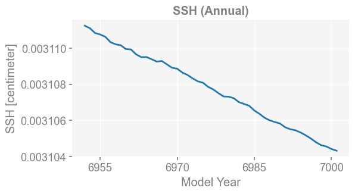
Figure saved at: "figs/map_SST_ann.png"
[73]:
case.calc('map:SST:-12,1,2', load_idx=-1)
fig, ax = case.plot(
'map:SST:-12,1,2',
figsize=(6, 6),
cbar_kwargs={'orientation': 'horizontal', 'aspect': 10, 'pad': 0.05},
)
x4c.showfig(fig)
x4c.savefig(fig, './figs/map_SST_DJF.png', dpi=300)
>>> case.ds["TEMP"] already loaded; to reload, run case.clear_ds("TEMP") before case.load("TEMP")
>>> case.diags["map:SST:-12,1,2"] created
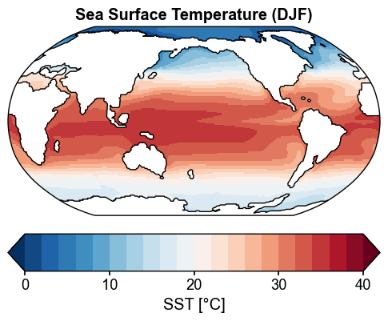
Figure saved at: "figs/map_SST_DJF.png"
[74]:
case.calc('map:SST:6,7,8', load_idx=-1)
fig, ax = case.plot(
'map:SST:6,7,8',
figsize=(6, 6),
cbar_kwargs={'orientation': 'horizontal', 'aspect': 10, 'pad': 0.05},
)
x4c.showfig(fig)
x4c.savefig(fig, './figs/map_SST_JJA.png', dpi=300)
>>> case.ds["TEMP"] already loaded; to reload, run case.clear_ds("TEMP") before case.load("TEMP")
>>> case.diags["map:SST:6,7,8"] created
Figure saved at: "figs/map_SST_JJA.png"
[WARNING] yaksa: 10 leaked handle pool objects
zm:SST#
[20]:
x4c.set_style('journal', font_scale=1.2)
case.calc('zm:SST:ann', load_idx=-1)
fig, ax = case.plot(
'zm:SST:ann',
figsize=(6, 4)
)
/glade/u/home/fengzhu/Github/x4c/x4c/core.py:28: AccessorRegistrationWarning: registration of accessor <class 'x4c.core.XDataset'> under name 'x' for type <class 'xarray.core.dataset.Dataset'> is overriding a preexisting attribute with the same name.
@xr.register_dataset_accessor('x')
/glade/u/home/fengzhu/Github/x4c/x4c/core.py:109: AccessorRegistrationWarning: registration of accessor <class 'x4c.core.XDataArray'> under name 'x' for type <class 'xarray.core.dataarray.DataArray'> is overriding a preexisting attribute with the same name.
@xr.register_dataarray_accessor('x')
>>> case.ds["TEMP"] already loaded; to reload, run case.clear_ds("TEMP") before case.load("TEMP")
>>> case.diags["zm:SST:ann"] created
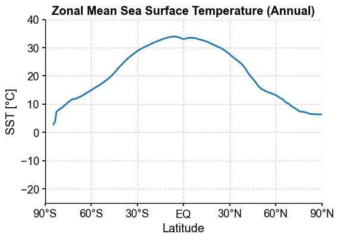
[21]:
x4c.set_style('journal', font_scale=1.2)
case.calc('zm:SST:6,7,8', load_idx=-1)
fig, ax = case.plot(
'zm:SST:6,7,8',
figsize=(6, 4)
)
>>> case.ds["TEMP"] already loaded; to reload, run case.clear_ds("TEMP") before case.load("TEMP")
>>> case.diags["zm:SST:6,7,8"] created
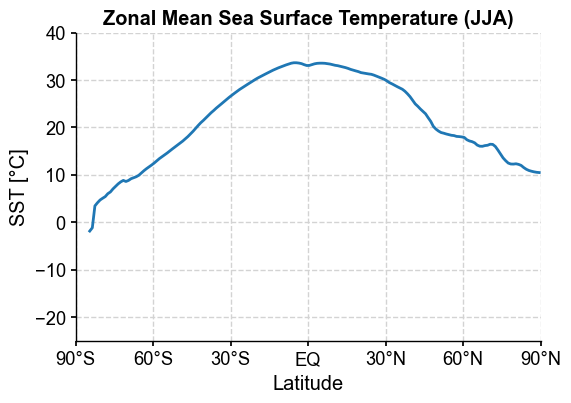
[22]:
x4c.set_style('journal', font_scale=1.2)
case.calc('zm:SST:-12,1,2', load_idx=-1)
fig, ax = case.plot(
'zm:SST:-12,1,2',
figsize=(6, 4)
)
>>> case.ds["TEMP"] already loaded; to reload, run case.clear_ds("TEMP") before case.load("TEMP")
>>> case.diags["zm:SST:-12,1,2"] created
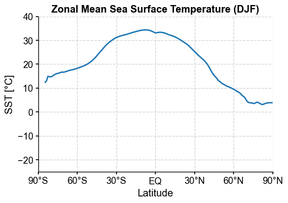
[23]:
x4c.set_style('journal_spines', font_scale=1.2)
fig, ax = case.plot('zm:SST:ann', figsize=(6, 4), label='Annual', color='tab:orange', lw=5)
ax = case.plot('zm:SST:6,7,8', ax=ax, label='JJA', color='tab:red')
ax = case.plot('zm:SST:-12,1,2', ax=ax, label='DJF', color='tab:blue')
ax.set_title('MCO (3xCO2) \nZonal Mean Sea Surface Temperature', weight='bold')
ax.legend(loc='lower center')
x4c.showfig(fig)
x4c.savefig(fig, './figs/zm_SST_compare_seasons.png', dpi=300)
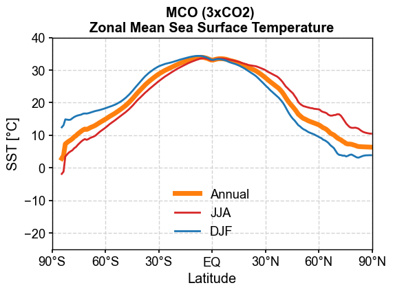
Figure saved at: "figs/zm_SST_compare_seasons.png"
[24]:
x4c.set_style('journal_spines', font_scale=1.2)
case.clear_ds()
case.calc('zm:SST:ann', load_idx=0)
fig, ax = case.plot('zm:SST:ann', figsize=(6, 4), label='0001-0050', color='tab:blue')
case.clear_ds()
case.calc('zm:SST:ann', load_idx=20)
ax = case.plot('zm:SST:ann', ax=ax, label='1001-1050', color='tab:orange')
case.clear_ds()
case.calc('zm:SST:ann', load_idx=-1)
ax = case.plot('zm:SST:ann', ax=ax, label='6951-7000', color='tab:red')
ax.set_title('MCO (3xCO2) \nZonal Mean Sea Surface Temperature', weight='bold')
ax.legend(loc='lower center')
x4c.showfig(fig)
x4c.savefig(fig, './figs/zm_SST_compare_spin-ups.png', dpi=300)
>>> case.ds["TEMP"] created
>>> case.diags["zm:SST:ann"] created
map:MLD#
[4]:
case.calc('map:MLD:3', load_idx=-1)
fig, ax = case.plot(
'map:MLD:3',
figsize=(6, 6),
cbar_kwargs={'orientation': 'horizontal', 'aspect': 20, 'pad': 0.05},
)
x4c.showfig(fig)
# x4c.savefig(fig, './figs/map_MLD_M.png', dpi=300)
x4c.savefig(fig, './figs/map_MLD_M.pdf')
>>> case.ds["XMXL"] already loaded; to reload, run case.clear_ds("XMXL") before case.load("XMXL")
>>> case.diags["map:MLD:3"] created
>>> case.ds["SSH"] already loaded; to reload, run case.clear_ds("SSH") before case.load("SSH")
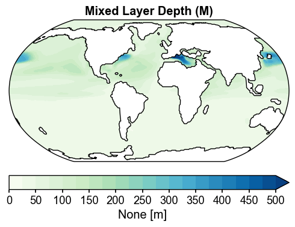
Figure saved at: "figs/map_MLD_M.pdf"
[13]:
case.calc('map:MLD:9', load_idx=-1)
fig, ax = case.plot(
'map:MLD:9',
figsize=(6, 6),
cbar_kwargs={'orientation': 'horizontal', 'aspect': 20, 'pad': 0.05},
)
x4c.showfig(fig)
x4c.savefig(fig, './figs/map_MLD_S.png', dpi=300)
>>> case.ds["XMXL"] already loaded; to reload, run case.clear_ds("XMXL") before case.load("XMXL")
>>> case.diags["map:MLD:9"] created
>>> case.ds["SSH"] already loaded; to reload, run case.clear_ds("SSH") before case.load("SSH")
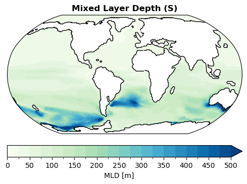
Figure saved at: "figs/map_MLD_S.png"
[15]:
mask = case.diags['map:MLD:3'].lat > 0
case.diags['map:MLD:mix'] = case.diags['map:MLD:3'].where(mask, other=case.diags['map:MLD:9'])
fig, ax = case.plot(
'map:MLD:mix',
figsize=(6, 6),
cbar_kwargs={'orientation': 'horizontal', 'aspect': 20, 'paqsd': 0.05},
)
ax.set_title('Mixed Layer Depth (NH: Mar; SH: Sept)', weight='bold')
x4c.showfig(fig)
# x4c.savefig(fig, './figs/map_MLD_mix.png', dpi=300)
# x4c.savefig(fig, './figs/map_MLD_mix.pdf')
>>> case.ds["SSH"] already loaded; to reload, run case.clear_ds("SSH") before case.load("SSH")
---------------------------------------------------------------------------
TypeError Traceback (most recent call last)
Cell In[15], line 4
1 mask = case.diags['map:MLD:3'].lat > 0
2 case.diags['map:MLD:mix'] = case.diags['map:MLD:3'].where(mask, other=case.diags['map:MLD:9'])
----> 4 fig, ax = case.plot(
5 'map:MLD:mix',
6 figsize=(6, 6),
7 cbar_kwargs={'orientation': 'horizontal', 'aspect': 20, 'paqsd': 0.05},
8 )
9 ax.set_title('Mixed Layer Depth (NH: Mar; SH: Sept)', weight='bold')
10 x4c.showfig(fig)
File ~/Github/x4c/x4c/case.py:110, in Timeseries.plot(self, vn, **kws)
108 def plot(self, vn, **kws):
109 plot_type, diag_name, mean_method = vn.split(':')
--> 110 return diags.DiagPlot.__dict__[f'plot_{plot_type}'](self, diag_name, mean_method=mean_method, **kws)
File ~/Github/x4c/x4c/diags.py:164, in DiagPlot.plot_map(case, diag_name, mean_method, **kws)
162 if 'SSH' in case.vars_info:
163 case.load('SSH', regrid=True)
--> 164 fig, ax = case.diags[f'map:{diag_name}:{mean_method}'].x.plot(ssv=case.ds['SSH'].mean('time'), **_kws)
165 else:
166 fig, ax = case.diags[f'map:{diag_name}:{mean_method}'].x.plot(**_kws)
File ~/Github/x4c/x4c/core.py:232, in XDataArray.plot(self, title, figsize, ax, latlon_range, projection, transform, central_longitude, proj_args, add_gridlines, gridline_labels, gridline_style, ssv, coastline_zorder, coastline_width, **kws)
229 else:
230 ax.contour(ssv.lon, ssv.lat, np.isnan(ssv), levels=[0, 1], colors='k', transform=_transform, zorder=coastline_zorder, linewidths=coastline_width)
--> 232 self.da.plot.contourf(ax=ax, **_plt_kws)
234 elif ndim == 2:
235 # vertical
236 if figsize is None: figsize = (6, 3)
File /glade/work/fengzhu/conda-envs/xpp-env/lib/python3.11/site-packages/xarray/plot/accessor.py:663, in DataArrayPlotAccessor.contourf(self, *args, **kwargs)
661 @functools.wraps(dataarray_plot.contourf, assigned=("__doc__",))
662 def contourf(self, *args, **kwargs) -> QuadContourSet | FacetGrid[DataArray]:
--> 663 return dataarray_plot.contourf(self._da, *args, **kwargs)
File /glade/work/fengzhu/conda-envs/xpp-env/lib/python3.11/site-packages/xarray/plot/dataarray_plot.py:1627, in _plot2d.<locals>.newplotfunc(***failed resolving arguments***)
1625 if add_labels and "label" not in cbar_kwargs:
1626 cbar_kwargs["label"] = label_from_attrs(darray)
-> 1627 cbar = _add_colorbar(primitive, ax, cbar_ax, cbar_kwargs, cmap_params)
1628 elif cbar_ax is not None or cbar_kwargs:
1629 # inform the user about keywords which aren't used
1630 raise ValueError(
1631 "cbar_ax and cbar_kwargs can't be used with add_colorbar=False."
1632 )
File /glade/work/fengzhu/conda-envs/xpp-env/lib/python3.11/site-packages/xarray/plot/utils.py:724, in _add_colorbar(primitive, ax, cbar_ax, cbar_kwargs, cmap_params)
721 cbar_kwargs.pop("extend")
723 fig = ax.get_figure()
--> 724 cbar = fig.colorbar(primitive, **cbar_kwargs)
726 return cbar
File /glade/work/fengzhu/conda-envs/xpp-env/lib/python3.11/site-packages/matplotlib/figure.py:1310, in FigureBase.colorbar(self, mappable, cax, ax, use_gridspec, **kwargs)
1306 cax.grid(visible=False, which='both', axis='both')
1308 NON_COLORBAR_KEYS = [ # remove kws that cannot be passed to Colorbar
1309 'fraction', 'pad', 'shrink', 'aspect', 'anchor', 'panchor']
-> 1310 cb = cbar.Colorbar(cax, mappable, **{
1311 k: v for k, v in kwargs.items() if k not in NON_COLORBAR_KEYS})
1312 cax.figure.stale = True
1313 return cb
TypeError: Colorbar.__init__() got an unexpected keyword argument 'paqsd'
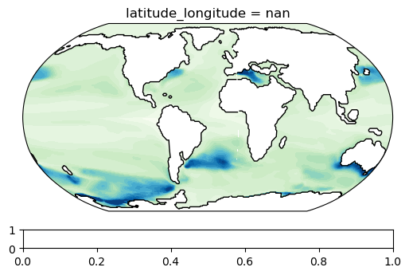
ts:MOC#
[4]:
x4c.set_style('web', font_scale=1.2)
case.calc('ts:MOC:ann', load_idx=-1, moc_z=slice(0.5, None), lat_aux_grid=slice(-90, -28))
fig, ax = case.plot('ts:MOC:ann')
>>> case.ds["MOC"] already loaded; to reload, run case.clear_ds("MOC") before case.load("MOC")
>>> case.diags["ts:MOC:ann"] created
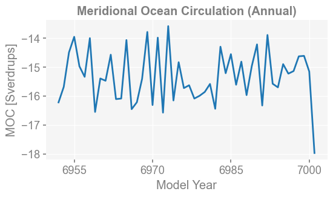
[5]:
x4c.set_style('journal_spines', font_scale=1.2)
case.calc('yz:MOC:ann', load_idx=-1)
fig, ax = case.plot('yz:MOC:ann')
# ax.set_title('Meridional Ocean Circulation (Sept)', weight='bold')
x4c.showfig(fig)
# x4c.savefig(fig, './figs/yz_MOC_S.png', dpi=300)
x4c.savefig(fig, './figs/yz_MOC_ann.png', dpi=300)
>>> case.ds["MOC"] already loaded; to reload, run case.clear_ds("MOC") before case.load("MOC")
>>> case.diags["yz:MOC:ann"] created
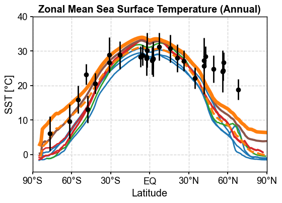
Figure saved at: "figs/yz_MOC_ann.png"
[20]:
case.diags['yz:MOC:ann'].max()
[20]:
<xarray.DataArray 'MOC' ()> Size: 4B
array(42.518387, dtype=float32)
Coordinates:
moc_components |S256 256B b'Eulerian Mean'
Attributes:
long_name: Meridional Ocean Circulation (Annual)
units: Sverdrups
cell_methods: time: mean
source: /glade/campaign/univ/ubrn0018/fengzhu/CESM_output/timeseri...
gw: <xarray.DataArray 'gw' (nlat: 384, nlon: 320)> Size: 983kB...
lat: <xarray.DataArray 'lat' (nlat: 384, nlon: 320)> Size: 983k...
lon: <xarray.DataArray 'lon' (nlat: 384, nlon: 320)> Size: 983k...
comp: ocn
grid: g16zm:DP#
[ ]: